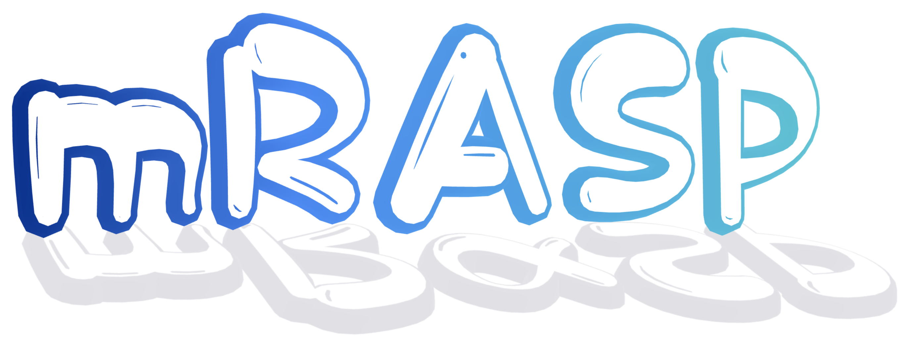

Lei Li
Univeristy of California Santa Barbara
Co-Director, UCSB NLP Group
Assistant Professor,
Computer Science Department
Research area: natural language processing, machine learning, data mining.
Topics:
- Machine translation, speech translation, multilingual NLP.
- LLM, text generation, program synthesis, reasoning.
- AI for drug design
- Efficient ML
- New paper about designing peptides to kill bacteria is accepted to KDD 2023.
- 5 new papers are accepted to ACL 2023. Topics include Speech Translation, Evaluation metric SEScore2, Machine translation for 440 languages, Zero-shot LLM, Negative Knowledge in LLM.
- 3 new papers are accepted to ICML 2023. Topics include Protein Design, Watermark for Language Generation, Speed up Diffusion.
- New papers at EMNLP 2022: Model Protection Model correction on factual knowledge, Unsupervised Text Generation Metric - SEScore.
- Our paper on accelerated training of Transformers on GPUs is accepted to SC 2022. The opensource software is released at github link
- Our paper analyzing the user engagement and activeness on content-based social media platforms is accepted to KDD 2022.
- Our paper on the learning of Non-autoregressive Transformers is accepted to ICML 2022.
- 3 papers are accepted to NAACL 2022 (2 in main and 1 in Findings), about speech translation, multilingual text generation, and privacy preserving NLP.
- 7 papers are accepted to ACL 2022 (4 in main and 3 in Findings), about speech translation, document translation, non-autoregressive translation, and representation learning.
- Our paper on bridge construction robot is accepted to ICRA 2022.
- Two papers is accepted to ICLR 2022. about multilingual NLP and multilingual translation.
- Three papers are accepted to AAAI 2022. Topics include natural language reasoning for fact verification, unsupervised counterfactual story editing, and non-autoregressive translation.
- The paper on reversible machine translation model is accepted to NeurIPS 2021. Check out here.
- 6 papers are accepted to EMNLP 2021, three to main confrence, and three to the Findings of EMNLP. The topics are machine translation, information extraction, and summarization.
- One paper extending the SOLO framework for instance segmentation is accepted to TPAMI.
- One paper about 3D instance segmentation is accepted to IEEE Robotics and Automation Letters.
- Our paper Vocabulary Learning via Optimal Transport for Neural Machine Translation won the best paper award at ACL 2021.
- Two papers are accepted to IROS 2021.
- One paper is accepted to InterSpeech 2021, about multi-task progressive pretraining for speech translation, achieving new SOTA results on MuST-C benchmarks.
- Dr. Mingxuan Wang and I will be giving a tutorial on Pre-training methods for Neural Machine Translation at ACL 2021, July 31
- 11 papers to appear at ACL 2021 (6 long, 4 findings, and 1 system demo). Strong results in machine translation and speech translation. Other topics include parallel generation, reasoning, summarization and information extraction.
- 1 paper is accepted to ICML 2021 about long horizon skill learning.
- 4 papers (1 main and 3 industry) are presenting at NAACL 2021. Check out the long paper about how visual imagination will influence machine translation capability.
- Four papers on object detection and segmentation are accepted to CVPR 2021, including Sparse R-CNN, DenseCL, Locate-Segment, Auto-Augment. DenCL is accepted as Oral.
- The paper on finding proper molecules for drug is accepted to ICLR 2021 with the spotlight presentation!
- Six papers are accepted to AAAI 2021, about end-to-end speech translation, knowledge graph completion, optimization, text generation.
- One paper about new method to generate query-relevant bidwords for search advertising is accepted to WSDM 2021.
- SOLOv2 is out! One paper about faster object instance segmentation in images is accepted to NeurIPS 2020.
- Winner of 5 tasks in WMT20 Machine Translation Contest on Chinese-English, German-English, French-German, English-Khmer, English-Pashto languages. Winner of the WMT20 parallel data filtering task on Khmer and Pashto languages.
- 5 papers accepted to EMNLP 2020! 3 in Long track and 2 in Findings.
- SOLO paper accepted to ECCV 2020, achieving the SOTA in visual object instance segmentation.
- 1 paper accepted to ICML 2020, about solving a family of deep latent models (exponential family mixture VAEs).
- 1 paper and 1 demo accepted to ACL 2020, about tailoring pretrained language model and the robot reporter Xiaomingbot.
- I am giving a talk at ICLR 2020 about Learning Deep Latent Models for Text Sequences. You may watch here.
- 1 paper accepted to AIStats 2020, about density ratio estimation for text generation.
- 2 papers accepted at ICLR 2020, about mirror generative model to unite language modelling and machine translation, and learning data-to-text generation templates via a variational method even without parallel corpus.
- 4 papers accepted at AAAI 2020, about pretraining method for neural machine translation, text editing, and approximate second order optimization.
- 1 paper accepted at NeurIPS 2019, about contextualized embedding for text generation and how we use kernels to model distribution and variance of word embeddings. see you in Vancouver.
- EMNLP 2019 Tutorial on Discreteness in NLP
- 1 paper accepted at INLG 2019. It is about the style transfer for text generation .
- 1 paper accepted at EMNLP 2019, about linear time neural machine translation.
- 2 papers accepted at ICCV 2019. One is to be presented as an Oral talk.
- Dr. Hao Zhou and I are going to give a tutorial on deep generative models for text generation at NLPCC-ADL 2019 at Dunhuang, China.
- CGMH: A method for controllable text generation from specified keywords. [arxiv]
- Analyzing anisotropic sentence embeddings from pre-trained language models. [arxiv]
-  Data-efficient methods for many-to-many neural machine translation. [mRASP, mRASP2]
- Glancing Transformer (GLAT): non-autoregressive translation models are equally good as autoregressive Transformer. [arxiv]
- VOLT: Learning vocabulary via optimal transport (ACL 2021 Best Paper). [arxiv]
- SOLO: Fast and accurate object instance segmentation. [SOLO, SOLOv2]